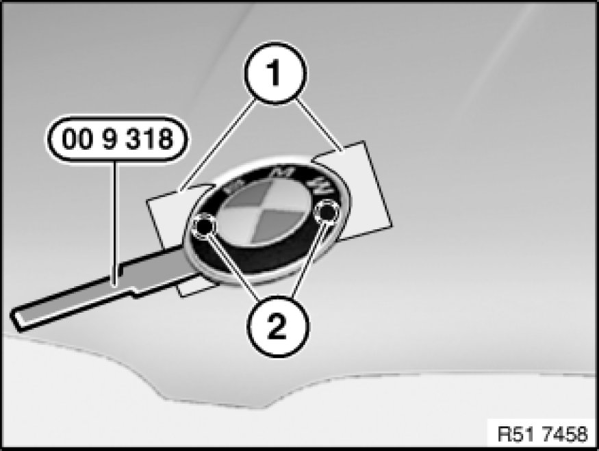
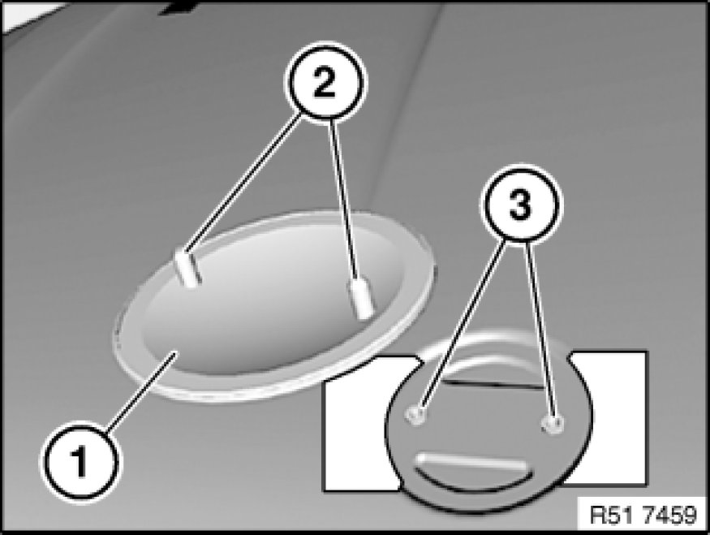

51 14 000 Removing and Installing/Replacing Front BMW Badge
51 14 000 - Removing and installing/replacing front BMW badge

Special tools required:
- 00 9 318 00 9 318 Multipurpose Wedge

Important!
Risk of damage!
To avoid damaging the paintwork on the engine hood/bonnet, tape off edge areas (1) to sides of guide pins.
So as not to subject the BMW badge to excessive deformation, lever out the badge with special tool 00 9 318 00 9 318 Multipurpose Wedge at guide pins (2).

Installation Note:
Following parts must not be damaged or missing:
1 - Badge
2 - Guide pins
3 - Grommets